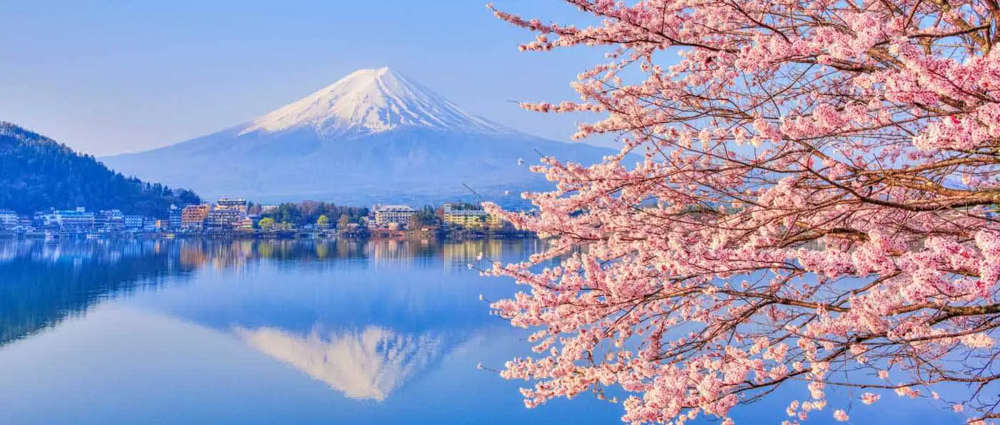

Japón: Un viaje entre tradición y modernidad.

Desde el momento en que puse un pie en Japón, sentí que entraba en otro mundo. Cada rincón parecía combinar perfectamente la calma de la tradición con el dinamismo de la modernidad. Caminar por las calles de Tokio, entre templos antiguos y luces de neón, me hizo comprender cómo este país logra mantener viva su esencia sin dejar de mirar hacia el futuro. Fue un viaje que no solo amplió mi visión del mundo, sino también mi manera de apreciar los pequeños detalles.
Santuario Fushimi Inari Taisha 🏯

Ciudad de Tokio 🏙️